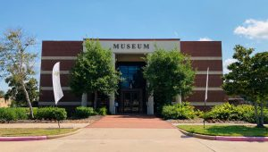
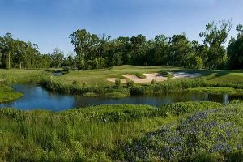
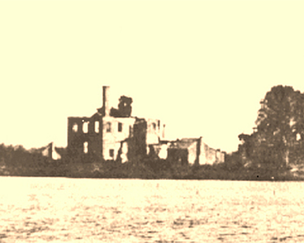
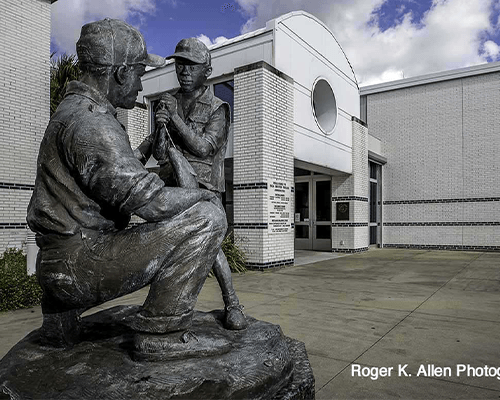

Events
Fort Velasco Exhibit
Historical Museum, 311 E. Park Freeport, TX 77541 United States
July 20 @ 9:00 am - 5:00 pm |Recurring Event
FORT VELASCO is an exclusive exhibit created by the museum staff at the Freeport Historical Museum & Visitor Center. Illustrated panels and original artifacts will guide visitors through the politics, personalities, and conflicts of 1832. The exhibit will run from June 7th to August 31st. In 1827, General Mier y Terán conducted a boundary report of the northern Mexican territory of Texas. After several years of American & European immigration into Texas from the United States under the empresario system,…
Apron Strings: Ties to the Past
Lake Jackson Historical Museum, 249 Circle Way Lake Jackson , TX 77566 United States
July 20 @ 10:00 am - 4:00 pm |Recurring Event
Although taken for granted by many social and art historians, the apron is the subject of a fascinating reevaluation in this exhibition. Apron Strings: Ties to the Past features 51 vintage and contemporary examples that review the apron’s role as an emotionally charged vehicle for expression with a rich and varied craft history that is still viable today. A Program of ExhibitsUSA, national division of Mid-America Arts Alliance with Texas Commission on the Arts and The National Endowment for the…
Wilderness Junior Golf Camp
The Wilderness Golf Course, 501 Hwy. 332 Lake Jackson, TX 77566 United States
July 21 @ 9:00 am - 12:00 pm |Recurring Event
Junior Instructional Fun Camp Ages 5-14 9:00AM-Noon Each Day $150 Per Student Price Includes: 4 Days of Instruction, Box Meal Each Day, Camp Hat, Clubs Included if Needed. Contact Golf Shop for Registration 979-297-4653 Ext.1
Lake Jackson History
This 1907 photo shows the once thriving Lake Jackson Plantation standing in ghostly ruin, several years after the infamous Galveston hurricane destroyed much of this inland property. When archeologists began excavations at the main plantation house (left), several smaller structures, and the sugar mill nearly 90 years later, most of the buildings had been reduced to crumbling walls and mounds of rubble. Photo courtesy Lake Jackson Historical Association.
Co-Founders Don Wasek and Arch "Beaver" Aplin opened their first store as partners, which is still open as of 2021, in Clute, Texas, in 1982. Aplin formed the name Buc-ee's by combining his childhood nickname; the name of his Labrador Retriever, Buck; as well as the appeal of Ipana toothpaste's animated mascot, Bucky the beaver. Aplin was born in Southeast Texas, with his father originating from, and grandparents residing in, Harrisonburg, Louisiana.
Sea Center Texas is a marine aquarium, fish hatchery and education center located on 75 acres in Lake Jackson, Texas. It is operated by the Texas Parks and Wildlife Department in partnership with the Coastal Conservation Association, The Dow Chemical Company and US Fish and Wildlife Service Sportfish Restoration Funds. The facility opened in 1996 and includes a visitor center with aquaria and exhibits of Texas marine life, the largest redfish hatchery in the world, 36 one-acre fish culture ponds, an outdoor wetland exhibit and a youth fishing pond. No food is available for sale at the facility. Picnic areas for large groups are located nearby at McLean Park. The facility is handicap accessible. Binoculars, a wheelchair, and walker are available for use on a first-come first-serve basis.
Lake Jackson Demographics
- White: 87.19%
- Two or more races: 3.63%
- Black or African American: 3.49%
- Asian: 3.03%
- Other race: 2.57%
- Native American: 0.09%
- Native Hawaiian or Pacific Islander: 0.00%
The current population of Lake Jackson, Texas is 26,820 based on our projections of the latest US Census estimates. The US Census estimates the 2018 population at 27,420.The last official US Census in 2010 recorded the population at 26,849.